Présentation du Cours
Ce cours est destiné aux étudiants de la première année, toutes filières confondues. Le but principal de ce module est d’amener l’apprenant à maîtriser les notions de base d’interaction avec un environnement digital dans le but de réaliser des tâches simples et quotidiennes de gestion de l’information.
Objectifs pédagogiques :
• Préparer et manipuler son environnement de travail
• Rechercher efficacement des ressources numériques
• Produire des documents sous format de document MS Word en respectant les standards
• Réaliser des présentations structurées et animées en utilisant MS Powerpoint
• Organiser, traiter et visualiser les données en utilisant MS Excel
Prérequis : Aucun prérequis.
Programme du module (7 Séquences) :
Séquence 01 : Environnement de travail matériel
Séquence 02 : Environnement de travail Logiciel
Séquence 03 : Internet et le Web
Séquence 04 : Intelligence artificielle et applications
Séquence 05 : MS Word
Séquence 06 : MS Excel
Séquence 07 : MS PowerPoint
Contexte de la Formation Fondamentale :
Ce module s'inscrit dans le cadre des compétences clés "Digital Skills / Culture digitale" dispensées au cours du Semestre 2 (S2) de la première année de Licence (parcours global de 180 crédits incluant l'obtention d'un certificat en langue étrangère).
Sequence 1 : Environnement de travail matériel
Histoire de l'évolution des ordinateurs
Introduction
Dans un monde en constante évolution, la création de l'ordinateur a représenté une révolution technologique majeure qui a radicalement transformé notre manière de vivre, de travailler et de communiquer. Mais pourquoi nos aînés ont-ils inventé l'ordinateur ? Un des facteurs était ce désir profond de dépasser les limites humaines en manière de calcul et de traitement de l'information.
Développement des ordinateurs au fil des époques
▪ Premier ordinateur rustique : le Boulier
Le premier ordinateur représentait une simple « machine à calculer ». Il était sous forme de boulier en bois que l'on appelle aussi Abacque et a été créé en l'an 3000 avant Jesus-Christ en Chine Antique (voir figure 1).

▪ Première génération des ordinateurs (1940 – 1950)
La première génération d'ordinateurs, qui a émergé entre 1940 et 1950, marque une période révolutionnaire dans le domaine de la technologie informatique. Cette ère est caractérisée par l'invention et le développement des premiers ordinateurs électroniques à grande échelle. Parmi ces machines pionnières, l'ENIAC (Electronic Numerical Integrator and Computer) est sans doute l'une des plus emblématiques. Conçu et construit entre 1943 et 1945, l'ENIAC fut l'un des premiers ordinateurs entièrement électroniques et programmables. Sa conception massive était principalement due à l'utilisation de tubes à vide, aussi appelés tubes cathodiques, qui étaient les principaux composants électroniques de l'époque. Contrairement aux ordinateurs modernes qui fonctionnent sur un système binaire (représentant les données par des 0 et des 1), l'ENIAC était basé sur la représentation décimale des nombres. Cela signifie qu'il utilisait le système numérique à dix chiffres (de 0 à 9) pour le calcul et le traitement des données.
▪ Deuxième génération des ordinateurs (1953 – 1955)
L'avènement du transistor dans les années 1950 représente un tournant majeur dans l'histoire de la technologie informatique et électronique. Cette innovation a permis de remplacer les tubes à vide encombrants et inefficaces, révolutionnant ainsi la conception et la fonctionnalité des ordinateurs (figure 2 et 3).
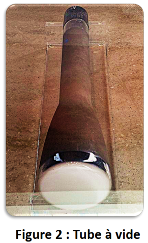
Le TRADIC (Transistor Digital Computer), développé pour l'US Air Force, fut l'un des premiers ordinateurs entièrement basés sur des transistors. Mis en service en 1954, le TRADIC symbolisait une avancée considérable par rapport à ses prédécesseurs de la première génération.
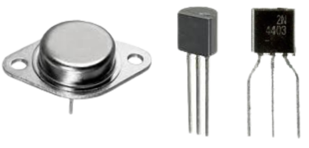
▪ Troisième génération des ordinateurs (1960 – 1969)
Les années 1960 ont été une période de changements révolutionnaires dans le domaine de la technologie informatique, marquée par l'introduction des circuits intégrés. Cette innovation a été le moteur principal de la miniaturisation des ordinateurs, conduisant à l'émergence de la troisième génération d'ordinateurs, souvent qualifiée de génération des « mini-ordinateurs ». Avant cette époque, les ordinateurs étaient de grandes machines encombrantes, souvent occupant des salles entières

L'IBM System-360, introduit en 1964, est un exemple phare de cette troisième génération. En plus de leur taille réduite, les mini-ordinateurs offraient une meilleure gestion de la mémoire, des capacités de traitement de données plus avancées et une plus grande fiabilité.
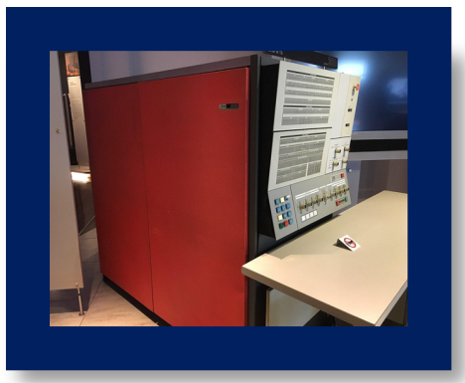
A travers cette accélération et l’engouement suscité par la miniaturisation, les scientifiques de l’université de Berkley ont inventé la première interface graphique avec souris en 1968.
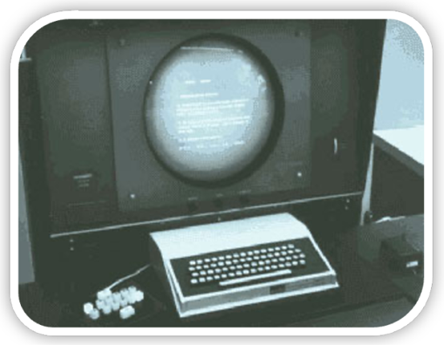
▪ Quatrième génération des ordinateurs : les micro-ordinateurs
L'émergence des micro-ordinateurs dans les années 1970 a marqué un tournant décisif dans l'histoire de l'informatique, rendant la technologie accessible et abordable pour le grand public. Cette révolution a été rendue possible grâce à l'invention du microprocesseur, un dispositif intégrant toutes les fonctions d'un processeur d'ordinateur sur un seul circuit intégré.
En 1972, le Micral N (voir figure 7), souvent considéré comme le premier micro-ordinateur commercial, a été introduit. Utilisant l'Intel 8008, l'un des premiers microprocesseurs disponibles sur le marché.
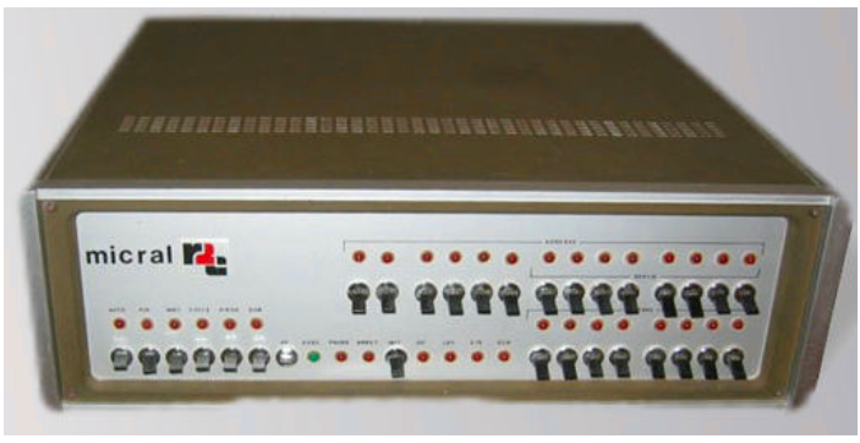
En 1973, le centre de recherche Xerox Parc a franchi une étape supplémentaire dans l'évolution des micro-ordinateurs avec la conception du Xerox Alto. Le Xerox Alto était révolutionnaire, non seulement pour son utilisation d'un microprocesseur, mais aussi pour son intégration de technologies qui allaient devenir des standards dans les ordinateurs personnels modernes. Il était équipé d'un clavier pour la saisie de données, d'un moniteur pour l'affichage graphique (GUI - Graphical User Interface). Le Xerox Alto, bien qu’initialement destiné à un usage interne et à la recherche, a eu un impact profond sur l'industrie informatique. Il a inspiré de nombreux aspects des ordinateurs personnels qui allaient suivre, y compris les célèbres Apple Macintosh et Microsoft Windows.
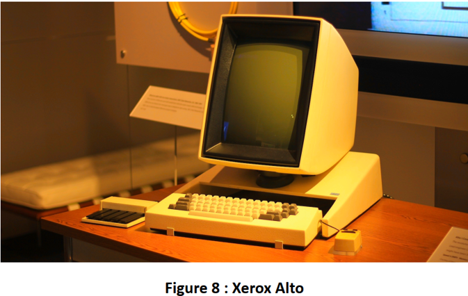
Résumé
En résumé, le développement des micro-ordinateurs avec l'introduction de microprocesseurs et les innovations apportées par des machines comme le Micral N et le Xerox Alto ont joué un rôle crucial dans la démocratisation de la technologie informatique. Ces avancées ont non seulement rendu les ordinateurs plus accessibles et faciles à utiliser pour le grand public, mais elles ont également ouvert de nouvelles voies pour l'innovation dans le domaine de l'informatique personnelle.
Les principaux composants d'un ordinateur
Introduction
Dans cette section vous découvrez les principaux composants d'un ordinateur qui le rendent extraordinaire, fonctionnel et efficace. Un ordinateur, qu'il soit aussi grand qu'une salle de serveurs ou aussi petit qu'un ordinateur portable, est un assemblage complexe de composants matériels et logiciels travaillant en harmonie pour exécuter une ou plusieurs tâches. Chaque composant joue un rôle crucial, contribuant à la capacité globale de l'ordinateur de traiter des données, d'exécuter des programmes et de communiquer avec le monde extérieur. Nous allons nous concentrer sur les éléments matériels, ou le "hardware".
Le microprocesseur (CPU)
Le microprocesseur est l'un des composants les plus vitaux dans la structure d'un système informatique. Il s'agit d'une puce électronique complexe qui exécute les instructions des programmes informatiques, traitant les opérations logiques, arithmétiques, de contrôle et d'entrée/sortie. Sa fonction est d'interpréter et d'exécuter les instructions provenant des logiciels et des autres composants matériels.
- La performance d'un microprocesseur est déterminée par sa fréquence, mesurée en Hertz (Hz). Un Hertz équivaut à un cycle par seconde.
- Les microprocesseurs modernes fonctionnent généralement à des vitesses de plusieurs gigahertz (GHz), ce qui signifie qu'ils peuvent effectuer des milliards de cycles par seconde.
- Il est important de noter que la fréquence du processeur n'est pas le seul indicateur de sa performance globale. D'autres facteurs, tels que le nombre de cœurs (unités de calcul indépendantes au sein d'un seul microprocesseur), la taille de la mémoire cache (une petite quantité de mémoire très rapide située sur le processeur).
Exemple
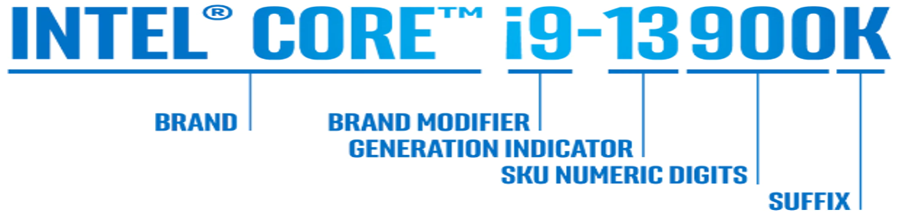
Prenons l'exemple du processeur Intel® Core™ i9-13900K :
- Marque : Intel® Core™
- Famille de processeur : i9
- Modèle : 13900
- Le premier ou les deux premiers chiffres du modèle (dans ce cas, 13) indiquent le numéro de génération.
- Les chiffres qui suivent le numéro de génération - 900 - sont le numéro du processeur.
- Ligne de produit : K
- La lettre à la fin du SKU désigne le processeur comme faisant partie d'une série - dans ce cas, la série K, désignant un processeur de jeu non verrouillé qui permet l'overclocking.
La mémoire Vive (RAM — Random Access Memory)
La mémoire vive, ou RAM, est un composant crucial de tout ordinateur, jouant un rôle central dans la détermination de sa performance globale (voir figure 2).
La RAM est une forme de stockage de données à court terme qui permet à votre ordinateur d'accéder rapidement aux fichiers et instructions nécessaires pendant une session active. Contrairement à la mémoire de stockage à long terme, comme un disque dur ou un SSD, qui conserve les données même lorsque l'ordinateur est éteint, la RAM est conçue pour être rapide et volatile (ce qui signifie que toutes les informations qu'elle stocke sont perdues lorsque l'ordinateur est éteint ou redémarré).
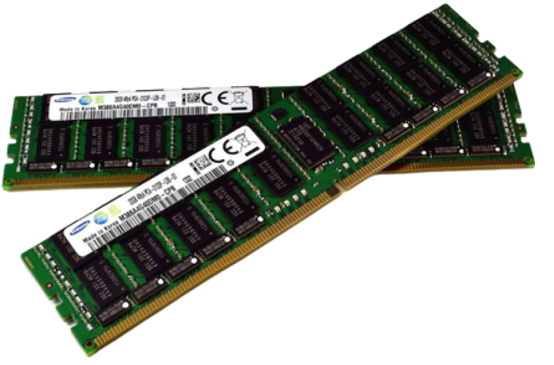
La mémoire Morte (ROM — Read-Only Memory)
La ROM joue un rôle fondamental, distinct de celui de la RAM, dans le fonctionnement global de l'ordinateur. Contrairement à la RAM, la ROM est une mémoire non volatile. Cela signifie que les informations et les instructions stockées dans la ROM sont préservées même lorsque l'ordinateur est éteint ou redémarré. La mémoire ROM contient des instructions essentielles pour les opérations de base de l'ordinateur, notamment le firmware ou le logiciel système intégré qui démarre l'ordinateur. L'un des composants les plus importants stockés dans la ROM est le BIOS (Basic Input/Output System), un ensemble de directives qui gère la communication entre le système d'exploitation et les périphériques matériels de l'ordinateur.
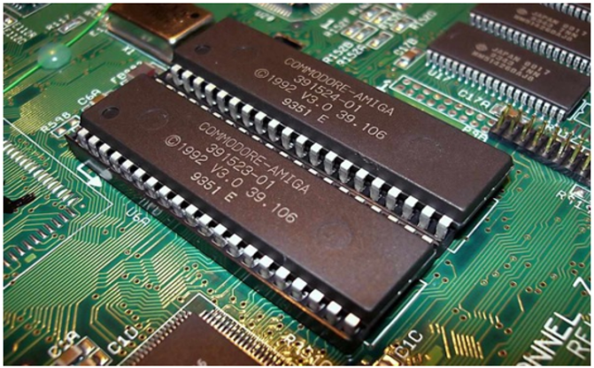
Le disque dur
Le disque dur est un composant fondamental de l'ordinateur, jouant un rôle clé dans le stockage de données de manière permanente. Contrairement à la mémoire vive (RAM), qui stocke temporairement les données utilisées par l'ordinateur pendant qu'il est en marche, le disque dur conserve les informations même lorsque l'ordinateur est éteint. Cela inclut le système d'exploitation, les logiciels, et les fichiers personnels tels que les documents, les photos et les vidéos.
1- Disques Durs IDE (Integrated Drive Electronics) : Les disques durs IDE, également connus sous le nom de disques durs ATA, étaient courants dans les ordinateurs plus anciens. Ils utilisaient une interface parallèle pour connecter les disques durs à la carte mère.
2- Disques Durs SATA (Serial Advanced Technology Attachment) : Les disques durs SATA sont une évolution des disques durs IDE, offrant des vitesses de transfert de données plus élevées et une meilleure efficacité grâce à leur interface série.
3- Disques SSD (Solid State Drives) : Les disques SSD représentent une avancée significative en matière de stockage de données. Contrairement aux disques durs traditionnels qui utilisent des disques rotatifs et des têtes de lecture/écriture mécaniques, les SSD utilisent des puces de mémoire flash sans pièces mobiles.
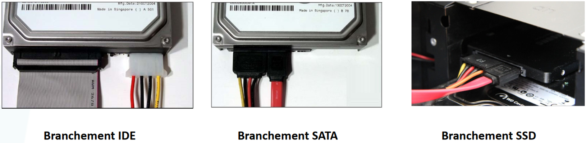
Important
Tous les composants ayant pour objectif de stocker une quantité d'informations tels que la mémoire RAM ou ROM ou le disque dur disposent d'une capacité de stockage. Celle-ci peut être exprimée en bit (b), et bytes (en français octet). Un bit correspond à une valeur binaire 0 ou 1. Un octet est équivalent à 8 bits. Vous aurez ainsi compris que toutes les informations de l'ordinateur sont codées en bits et donc en octets.
Résumé des composants
Les principaux composants qu'on a découvert peuvent être résumés ainsi :
- Microprocesseur (CPU) : Le cerveau de l'ordinateur, responsable de l'exécution des instructions des programmes. Sa vitesse est déterminée par sa fréquence en hertz (Hz).
- Mémoire Vive (RAM) : Mémoire temporaire utilisée pour stocker les données des programmes en cours d'exécution. Une capacité de RAM plus élevée permet un meilleur multitâche et une exécution plus fluide des applications.
- Mémoire Morte (ROM) : Mémoire non-volatile contenant des données essentielles pour le démarrage et le fonctionnement de base de l'ordinateur, comme le BIOS.
- Disque Dur : Utilisé pour le stockage permanent des données. Il existe différents types, y compris les disques durs IDE, SATA, et les disques SSD.
- Carte Mère : Le composant qui relie tous les autres composants de l'ordinateur, permettant leur communication et interaction.
La représentation de l'information dans un système informatique
Introduction
L'ordinateur ne comprend que le langage machine qui est le langage binaire. En réalité il s'agit de signaux électriques que capte l'ordinateur; Le 1 veut dire qu'il y a passage du courant, et 0 non. Mais il n'est pas pratique de communiquer avec l'ordinateur avec le langage binaire ! Pour cela, on a traduit le langage binaire en créant la table ASCII (American Standard Code for Information Interchange) que vous pouvez trouver facilement en ligne.
Le codage binaire: La base binaire
Le langage binaire est un système de représentation de l'information basé sur deux symboles : 0 et 1. C'est le langage fondamental des ordinateurs, car les circuits électroniques ne peuvent manipuler que deux états (tension haute = 1, tension basse = 0).
Pourquoi utiliser le binaire ?
▪ Il est facile à implémenter avec des transistors (états ON/OFF).
Comment l'ordinateur l'utilise ?
▪ Tout ce que nous voyons à l'écran (texte, images, vidéos, sons) est converti en séquences de 0 et 1 pour être stocké, traité et affiché.
Les unités de mesure en informatique
En informatique, la quantité d'information est mesurée en bits et octets.
▪ Le bit (binary digit)
• Définition : Plus petite unité d'information, représentant 0 ou 1.
• Exemple : Le nombre binaire 1011 contient 4 bits.
▪ L'octet (Byte)
• 1 octet = 8 bits (exemple : 11001010).
• Il permet de représenter un caractère en ASCII (ex : 'A' = 01000001).
| Unité | Abréviation | Équivalence |
|---|---|---|
| 1 bit | - | 0 ou 1 |
| 1 octet (Byte) | B | 8 bits |
| 1 kilo-octet | Ko | 1 024 octets |
| 1 méga-octet | Mo | 1 024 Ko |
| 1 giga-octet | Go | 1 024 Mo |
| 1 téra-octet | To | 1 024 Go |
Exemple : Que représente ½ Go ?
➊ Conversion de Go vers To
Pour passer de Go à To, on se déplace vers une unité plus grande. Chaque déplacement vers la gauche implique une division par 1024.
= 1 / (2 × 1024) To
= 1 / 2048 To
➋ Conversion de Go vers Mo
Pour passer de Go à Mo, on se déplace vers une unité plus petite. Chaque déplacement vers la droite implique une multiplication par 1024.
= 1024 / 2 Mo
= 512 Mo
➌ Vérification des propositions
- ✅ 1 / 2048 To : Correct
- ✅ 512 Mo : Correct
- ❌ 1024 Mo : Incorrect (1 Go = 1024 Mo, donc ½ Go = 512 Mo)
½ Go = 512 Mo = 1 / 2048 To
Le système décimal
Les nombres que nous utilisons habituellement sont ceux de la base 10 (système décimal). Nous disposons de dix chiffres différents de 0 à 9 pour écrire tous les nombres. D'une manière générale, toute base N est composée de N chiffres de 0 à N-1.
▪ Soit un nombre décimal N = 2348. Ce nombre est la somme de : 8 unités, 4 dizaines, 3 centaines et 2 milliers.
Nous pouvons écrire:
2348 = (2 × 10³) + (3 × 10²) + (4 × 10¹) + (8 × 10⁰)
Le système hexadécimal
Le système hexadécimal est un système de numération en base 16. Contrairement à la base décimale qui utilise les chiffres 0 à 9, le système hexadécimal utilise en plus les lettres de A à F, soit 16 symboles au total. Le mot « hexadécimal » commence avec le préfixe « hexa » (hex signifiant 6 en grec) et l'adjectif décimal signifie « qui procède par 10 ».
Le Code ASCII
Le code ASCII est un système de codage qui associe chaque caractère (lettres, chiffres, symboles) à une valeur numérique en base binaire. Il est utilisé par les ordinateurs pour représenter du texte en utilisant des octets (8 bits).
▪ Pourquoi utiliser ASCII ?
✓ Permet aux ordinateurs de comprendre et manipuler du texte.
✓ Assure la compatibilité entre différents systèmes informatiques.
▪ Remarque :
✓ Les lettres majuscules (A-Z) sont codées de 65 à 90.
✓ Les lettres minuscules (a-z) sont codées de 97 à 122.
✓ Les chiffres (0-9) vont de 48 à 57.
Table ASCII
| Décimal | Hexa | Caractère | Description | Décimal | Hexa | Caractère | Description |
|---|---|---|---|---|---|---|---|
| 0 | 00 | NUL | Caractère nul (Null) | 64 | 40 | @ | Arobase |
| 1 | 01 | SOH | Début d'en-tête (Start of Heading) | 65 | 41 | A | Lettre majuscule A |
| 2 | 02 | STX | Début de texte (Start of Text) | 66 | 42 | B | Lettre majuscule B |
| 3 | 03 | ETX | Fin de texte (End of Text) | 67 | 43 | C | Lettre majuscule C |
| 4 | 04 | EOT | Fin de transmission (End of Trans.) | 68 | 44 | D | Lettre majuscule D |
| 5 | 05 | ENQ | Demande (Enquiry) | 69 | 45 | E | Lettre majuscule E |
| 6 | 06 | ACK | Accusé de réception (Acknowledge) | 70 | 46 | F | Lettre majuscule F |
| 7 | 07 | BEL | Signal sonore (Bell) | 71 | 47 | G | Lettre majuscule G |
| 8 | 08 | BS | Retour arrière (Backspace) | 72 | 48 | H | Lettre majuscule H |
| 9 | 09 | HT | Tabulation horizontale | 73 | 49 | I | Lettre majuscule I |
| 10 | 0A | LF | Saut de ligne (Line Feed) | 74 | 4A | J | Lettre majuscule J |
| 11 | 0B | VT | Tabulation verticale | 75 | 4B | K | Lettre majuscule K |
| 12 | 0C | FF | Saut de page (Form Feed) | 76 | 4C | L | Lettre majuscule L |
| 13 | 0D | CR | Retour chariot (Carriage Return) | 77 | 4D | M | Lettre majuscule M |
| 14 | 0E | SO | Hors code (Shift Out) | 78 | 4E | N | Lettre majuscule N |
| 15 | 0F | SI | En code (Shift In) | 79 | 4F | O | Lettre majuscule O |
| 16 | 10 | DLE | Échappement liaison (Data Link Esc.) | 80 | 50 | P | Lettre majuscule P |
| 17 | 11 | DC1 | Contrôle périphérique 1 | 81 | 51 | Q | Lettre majuscule Q |
| 18 | 12 | DC2 | Contrôle périphérique 2 | 82 | 52 | R | Lettre majuscule R |
| 19 | DC3 | DC3 | Contrôle périphérique 3 | 83 | 53 | S | Lettre majuscule S |
| 20 | 14 | DC4 | Contrôle périphérique 4 | 84 | 54 | T | Lettre majuscule T |
| 21 | 15 | NAK | Accusé de réception négatif | 85 | 55 | U | Lettre majuscule U |
| 22 | 16 | SYN | Attente synchrone (Synchronous Idle) | 86 | 56 | V | Lettre majuscule V |
| 23 | 17 | ETB | Fin de bloc de texte | 87 | 57 | W | Lettre majuscule W |
| 24 | 18 | CAN | Annulation (Cancel) | 88 | 58 | X | Lettre majuscule X |
| 25 | 19 | EM | Fin de support (End of Medium) | 89 | 59 | Y | Lettre majuscule Y |
| 26 | 1A | SUB | Substitut (Substitute) | 90 | 5A | Z | Lettre majuscule Z |
| 27 | 1B | ESC | Échappement (Escape) | 91 | 5B | [ | Crochet ouvrant |
| 28 | 1C | FS | Séparateur de fichier | 92 | 5C | \ | Barre oblique inversée (Antislash) |
| 29 | 1D | GS | Séparateur de groupe | 93 | 5D | ] | Crochet fermant |
| 30 | 1E | RS | Séparateur d'enregistrement | 94 | 5E | ^ | Accent circonflexe |
| 31 | 1F | US | Séparateur d'unité | 95 | 5F | _ | Trait de soulignement (Underscore) |
| 32 | 20 | Espace | 96 | 60 | ` | Accent grave | |
| 33 | 21 | ! | Point d'exclamation | 97 | 61 | a | Lettre minuscule a |
| 34 | 22 | " | Guillemet droit | 98 | 62 | b | Lettre minuscule b |
| 35 | 23 | # | Dièse | 99 | 63 | c | Lettre minuscule c |
| 36 | 24 | $ | Signe dollar | 100 | 64 | d | Lettre minuscule d |
| 37 | 25 | % | Signe pourcentage | 101 | 65 | e | Lettre minuscule e |
| 38 | 26 | & | Esperluette (Et commercial) | 102 | 66 | f | Lettre minuscule f |
| 39 | 27 | ' | Apostrophe | 103 | 67 | g | Lettre minuscule g |
| 40 | 28 | ( | Parenthèse ouvrante | 104 | 68 | h | Lettre minuscule h |
| 41 | 29 | ) | Parenthèse fermante | 105 | 69 | i | Lettre minuscule i |
| 42 | 2A | * | Astérisque | 106 | 6A | j | Lettre minuscule j |
| 43 | 2B | + | Signe plus | 107 | 6B | k | Lettre minuscule k |
| 44 | 2C | , | Virgule | 108 | 6C | l | Lettre minuscule l |
| 45 | 2D | - | Trait d'union / Signe moins | 109 | 6D | m | Lettre minuscule m |
| 46 | 2E | . | Point | 110 | 6E | n | Lettre minuscule n |
| 47 | 2F | / | Barre oblique (Slash) | 111 | 6F | o | Lettre minuscule o |
| 48 | 30 | 0 | Chiffre 0 | 112 | 70 | p | Lettre minuscule p |
| 49 | 1 | 1 | Chiffre 1 | 113 | 71 | q | Lettre minuscule q |
| 50 | 32 | 2 | Chiffre 2 | 114 | 72 | r | Lettre minuscule r |
| 51 | 33 | 3 | Chiffre 3 | 115 | 73 | s | Lettre minuscule s |
| 52 | 34 | 4 | Chiffre 4 | 116 | 74 | t | Lettre minuscule t |
| 53 | 35 | 5 | Chiffre 5 | 117 | 75 | u | Lettre minuscule u |
| 54 | 36 | 6 | Chiffre 6 | 118 | 76 | v | Lettre minuscule v |
| 55 | 37 | 7 | Chiffre 7 | 119 | 77 | w | Lettre minuscule w |
| 56 | 38 | 8 | Chiffre 8 | 120 | 78 | x | Lettre minuscule x |
| 57 | 39 | 9 | Chiffre 9 | 121 | 79 | y | Lettre minuscule y |
| 58 | 3A | : | Deux-points | 122 | 7A | z | Lettre minuscule z |
| 59 | 3B | ; | Point-virgule | 123 | 7B | { | Accolade ouvrante |
| 60 | 3C | < | Signe inférieur à | 124 | 7C | | | Barre verticale (Pipe) |
| 61 | 3D | = | Signe égal | 125 | 7D | } | Accolade fermante |
| 62 | 3E | > | Signe supérieur à | 126 | 7E | ~ | Tilde |
| 63 | 3F | ? | Point d'interrogation | 127 | 7F | DEL | Supprimer (Delete) |
La conversion de la base décimale à la base binaire
Soit le nombre 18, pour le transformer en binaire, on le divise successivement par 2 et on prend les restes.
9 ÷ 2 = 4 reste 1
4 ÷ 2 = 2 reste 0
2 ÷ 2 = 1 reste 0
1 ÷ 2 = 0 reste 1
➜ (18)₁₀ = (10010)₂
La conversion de la base binaire à la base décimale
Soit le nombre binaire 10010 pour le représenter dans le système décimal on procède comme suit :
= 0×1 + 1×2 + 0×4 + 0×8 + 1×16
= 2 + 16 = 18
➜ (10010)₂ = (18)₁₀
La conversion d'un nombre binaire en hexadécimal
Soit le nombre binaire 111100011100101 pour le représenter dans le système hexadécimal on procède comme suit (groupement par 4 bits depuis la droite) :
Groupes : 0111 | 1000 | 1110 | 0101
Valeurs : 7 | 8 | E | 5
➜ (111100011100101)₂ = (78E5)₁₆
Conversion de code ASCII en binaire
Exemple : Ahmed
h (104 en décimal) → 0110 1000
m (109 en décimal) → 0110 1101
e (101 en décimal) → 0110 0101
d (100 en décimal) → 0110 0100
Ahmed (ASCII) = (0100 0001 0110 1000 0110 1101 0110 0101 0110 0100)₂
Exercices
- Convertir en unité de mesure donnée : 10 ko = …… Bit 1 To = ……… Octet 8192 Bit = …… Ko
- Convertir en binaire puis en hexadécimal, les nombres suivants : 120, 255, 512, 257, 1001
- Convertir en décimal puis hexadécimal, les nombres suivants : 0111100, 1111001, 11101100, 1000100001, 10010001111
- Ecrire le mot « Informatique » en décimal, hexadécimal et en binaire utilisant le Code ASCII.
Les périphériques d'entrée et de sortie
Introduction
Le schéma de la figure ci-contre présente le schéma fonctionnel d’un ordinateur. Nous pouvons remarquer que les différents périphériques sont liées à l’unité centrale de l’ordinateur. Dans cette section, vous allez découvrir les périphériques informatiques d’un ordinateurs et leurs caractéristiques.

Définition
Un périphérique informatique est un dispositif connecté à un système de traitement de l'information central (ordinateur, smartphone, console de jeu, etc.) et qui ajoute à ce dernier des fonctionnalités. En d'autres termes, un périphérique représente tout composant permettant de faire communiquer l'ordinateur avec le monde extérieur.
Types de périphériques
Il existe quatre principaux types de périphériques :
- Les périphériques d'entrée
- Les périphériques de sortie
- Les périphériques d'entrée-sortie
- Les périphériques de stockage
Les périphériques d'entrée
Un périphérique d'entrée est un périphérique informatique permettant de communiquer de l'information à un ordinateur.
Exemples :
Les périphériques de sortie
Un périphérique de sortie est un périphérique informatique permettant de transmettre les informations de l'ordinateur vers les utilisateurs. C'est-à-dire, il récupère l'information à partir de l'unité centrale de l'ordinateur et nous la transmet.
Exemples :
Les périphériques d'entrée-sortie
Ce sont des périphériques particuliers car ils se caractérisent par leur double fonctionnalité :
- Introduction de l'information dans l'ordinateur
- Faire ressortir l'information de l'ordinateur
Les périphériques de stockage
Les unités de stockage sont des mémoires qui conservent les informations de manière permanente (de façon durable).
Exemples :
Sequence III : Internet et le Web
Histoire d'Internet
Introduction
Dans cette partie du cours, nous allons explorer les différentes étapes d'évolution d'internet. De ses débuts modestes dans les années 1960 à son omniprésence aujourd'hui, nous allons retracer l'histoire de cette technologie qui a changé le monde.
Phase 1 - Les débuts d'Internet
Dans les années soixante, il existait aux États-Unis de gros centres de calcul abritant de très gros ordinateurs. Ces ordinateurs étaient reliés entre eux par des câbles qui leur permettaient de transporter l'information numérique : c'est ce qu'on appelle des réseaux informatiques (en anglais network souvent abrégé en net).
- 1971 : En période de guerre froide, les États-Unis avaient peur que les centres de calcul soient bombardés ou qu'une ligne reliant 2 centres soit coupée. C'est la naissance d'ARPANET et l'envoi du premier courrier électronique par Tomlinson.
- 1979 : 23 ordinateurs reliés sur ARPANET.
- 1983 : Adoption du mot « Internet » pour signifier l'interconnexion de réseaux.
- 1984 : 1 000 ordinateurs connectés.
- 1987 : 10 000 ordinateurs connectés.
- 1989 : 100 000 ordinateurs interconnectés.
À cette époque, Internet était principalement utilisé pour la communication entre scientifiques et universités.
Phase 2 - L'expansion d'Internet
Dans les années 1990, Internet a connu une croissance exponentielle avec l'arrivée du World Wide Web (inventé par Tim Berners-Lee en 1991) et la popularisation des navigateurs web : Mosaic (1993), Internet Explorer (1995). 1995 marque aussi le lancement du moteur de recherche Yahoo, suivi par Google en 1998.
1996 : 36 millions d'ordinateurs connectés à Internet.
Phase 3 - L'avènement du Web 2.0
Dans les années 2000, le Web 2.0 est apparu, introduisant les réseaux sociaux comme Facebook, Twitter et LinkedIn. Les utilisateurs sont passés du Web 1.0 (contenu statique : pages simples, images) au Web 2.0 (création et partage de contenu en temps réel, collaboration en ligne).
Phase 4 - L'ère de la mobilité
Les années 2010 ont vu l'avènement de la mobilité avec la popularisation des smartphones et tablettes. Les utilisateurs accèdent de plus en plus à Internet via leurs appareils mobiles, ce qui a conduit à la création de sites et applications adaptés (responsive design).
Phase 5 - L'Internet des objets (IoT)
Aujourd'hui, nous sommes entrés dans l'ère de l'Internet des objets, où les appareils et objets du quotidien se connectent à Internet et échangent des données : voitures connectées, montres intelligentes, appareils domestiques, villes intelligentes.
Comment fonctionne Internet ?
Introduction
Internet est un réseau mondial de milliards d'ordinateurs connectés entre eux, permettant la communication, le partage d'informations et la collaboration à l'échelle planétaire. Pour comprendre son fonctionnement, trois concepts clés sont à maîtriser : les adresses IP, le DNS et les routeurs.
Adresse IP (Internet Protocol)
Chaque appareil connecté à Internet possède une adresse IP unique qui l'identifie et le localise sur le réseau.
📡 IPv4
32 bits (4 octets) — environ 4,3 milliards d'adresses
203.0.113.45
4 nombres séparés par des points, chacun entre 0 et 255.
🌍 IPv6
128 bits — un nombre pratiquement illimité d'adresses
2001:0db8:85a3:0000:0000:8a2e:0370:7334
8 groupes de 4 chiffres hexadécimaux, séparés par des deux-points.
Pourquoi IPv6 ? IPv4 manquait d'adresses à cause de l'explosion du nombre d'appareils connectés. IPv6 résout cette pénurie.
DNS (Domain Name System)
Le DNS agit comme un traducteur entre les noms de domaine (ex: www.google.com) et les adresses IP (ex: 172.217.168.46). Les humains retiennent facilement des noms, mais les ordinateurs ont besoin d'adresses IP.
Fonctionnement : Lorsque vous tapez une URL, votre navigateur interroge un serveur DNS qui lui renvoie l'adresse IP correspondante, permettant ainsi d'établir la connexion.
Routeurs
Les routeurs sont les aiguilleurs du réseau. Ils relient différents réseaux entre eux et déterminent le chemin le plus court et le plus fiable pour acheminer les paquets de données. Leurs tables de routage sont mises à jour en permanence pour optimiser les trajets.
Fonctionnement du Web
Définition
Le Web est un service accessible via Internet permettant l'échange de ressources : textes, images, vidéos, sons. Ces ressources sont stockées sur des serveurs et consultées via des navigateurs (Chrome, Firefox, Safari...).
Principe Client-Serveur
Le client (navigateur) envoie des requêtes aux serveurs distants qui hébergent les ressources. Les serveurs traitent ces requêtes et renvoient les ressources demandées.

Protocoles HTTP et HTTPS
HTTP (Hypertext Transfer Protocol) est le langage commun entre clients et serveurs. HTTPS = HTTP + chiffrement (Sécurisé). Utilisez toujours HTTPS pour protéger vos données personnelles (mots de passe, coordonnées bancaires).
URL (Uniform Resource Locator)
Une URL est l'adresse unique d'une ressource sur le Web. Exemple décomposé :
- http:// : protocole
- ead.uit.ac.ma : nom de domaine (serveur)
- /moodle/course/index.php : chemin d'accès à la ressource
Exemple complet de communication
En saisissant http://ead.uit.ac.ma/moodle/course/index.php dans Chrome, le client envoie une requête au serveur ead.uit.ac.ma pour obtenir index.php. Le serveur traite la requête via HTTP, copie la ressource et la renvoie au client pour affichage.
Technologies Web : HTML, CSS et JavaScript
Introduction
HTML, CSS et JavaScript sont les trois piliers du développement web. HTML structure le contenu, CSS le met en forme, JavaScript le rend interactif. Ils travaillent ensemble pour créer des sites modernes et performants.
HTML (HyperText Markup Language)
HTML utilise des balises pour structurer la page : titres, paragraphes, listes, images, etc.
<!DOCTYPE html>
<html>
<head>
<meta charset="UTF-8">
<title>Mon premier site</title>
<link rel="stylesheet" href="style.css">
</head>
<body>
<h1>Bienvenue sur ma page</h1>
<p id="monParagraphe">Ceci est un exemple interactif.</p>
<button onclick="changerCouleur()">Cliquez-moi</button>
<script src="script.js"></script>
</body>
</html>
CSS (Cascading Style Sheets)
CSS contrôle l'apparence visuelle : couleurs, polices, marges, positionnement, animations.
/* style.css - Mise en forme de la page */
body {
font-family: 'Segoe UI', sans-serif;
background: linear-gradient(135deg, #667eea 0%, #764ba2 100%);
color: white;
text-align: center;
padding: 50px;
}
h1 {
font-size: 2.5em;
text-shadow: 2px 2px 4px rgba(0,0,0,0.3);
}
p {
background: rgba(255,255,255,0.2);
padding: 15px;
border-radius: 25px;
transition: all 0.3s ease;
}
button {
background: #ff6b6b;
border: none;
padding: 12px 30px;
font-size: 1.2em;
border-radius: 40px;
cursor: pointer;
color: white;
font-weight: bold;
box-shadow: 0 4px 15px rgba(0,0,0,0.2);
transition: transform 0.2s;
}
button:hover {
transform: scale(1.05);
background: #ff4757;
}
JavaScript
JavaScript ajoute de l'interactivité : réactions aux clics, modifications dynamiques, animations, appels API, etc.
// script.js - Comportement interactif
function changerCouleur() {
let paragraphe = document.getElementById("monParagraphe");
// Change le texte du paragraphe
paragraphe.innerHTML = "🎉 Tu as cliqué ! Le JavaScript a modifié cette phrase.";
// Change la couleur de fond du paragraphe
paragraphe.style.backgroundColor = "#ff4757";
paragraphe.style.color = "white";
paragraphe.style.fontWeight = "bold";
// Affiche une alerte amusante
alert("Bien joué ! Tu viens d'exécuter du JavaScript.");
}
✨ Résultat : Le fichier HTML structure la page, le CSS la rend belle, et JavaScript la rend interactive (au clic sur le bouton, le texte et le style changent, et une alerte apparaît).
Comment fonctionnent les moteurs de recherche ?
Définition
Un moteur de recherche est un système logiciel qui explore et analyse des milliards de pages web pour fournir les résultats les plus pertinents face à une requête utilisateur.
Histoire des moteurs de recherche
- Archie (1990) : le premier moteur, précurseur.
- Lycos (1994) : index de 60 millions de documents.
- Yahoo (1994) : annuaire web populaire.
- AltaVista (1995) : premier moteur multilingue à indexation rapide.
- Google (1998) : révolution avec l'algorithme PageRank.
- Bing (2009) : concurrent de Google.
Fonctionnement (3 étapes clés)

- Exploration & Indexation : Des robots (crawlers) parcourent le web et stockent les pages dans d'immenses bases de données.
- Traitement & Classement : Lors d'une requête, des algorithmes analysent l'index et classent les pages par pertinence (qualité, popularité, mots-clés...).
- Affichage des résultats : Le moteur présente une liste de liens sur la page de résultats (SERP).
Recherche avancée sur Google
Conseils pratiques
- Définissez des mots-clés précis avant de chercher.
- Utilisez les onglets : Images, Vidéos, Actualités, Maps.
- Filtrez par date avec l'onglet "Outils" → "Période".
Opérateurs de recherche (à connaître absolument)
| Fonction | Opérateur | Exemple |
|---|---|---|
| Expression exacte | "..." | "recette de gâteau au chocolat" |
| Exclusion de mots | -mot | recette gâteau -noix |
| Site spécifique | site: | site:wikipedia.org Albert Einstein |
| Type de fichier | filetype: | changement climatique filetype:pdf |
| Recherche par image | (icône appareil photo) | Google Images → Déposer une image |
Sequence IV : Intelligence Artificielle
Introduction à l'Intelligence Artificielle
Introduction
L'intelligence artificielle est en train de changer le monde, mais elle reste pourtant méconnue par de nombreuses personnes. Ce cours a pour objectif de donner une petite introduction au fonctionnement de l'intelligence artificielle. Principalement : Quelques définitions, les concepts de base, les cas d'usage et les applications de l'IA.
Types d'interactions dans le domaine de l'IA
Maintenant, on verra à quoi ça sert l'intelligence artificielle ? Pour cela, on va illustrer deux types d'interactions assez différentes.

- Interaction avec une base de données : Un serveur envoie des données (ex: images) à l'agent IA qui restitue des résultats, créant ainsi une boucle.
- Interaction avec un environnement : L'environnement (machine de production, jeu vidéo) renseigne l'agent sur l'état du jeu, puis l'agent répond par une action à effectuer.
Exemples des Cas d'utilisation
Le premier exemple concerne une interaction avec une base de données. L'intelligence artificielle est capable de faire deux choses différentes : Prédire ou Classer.
1er Cas d'utilisation : Prédiction 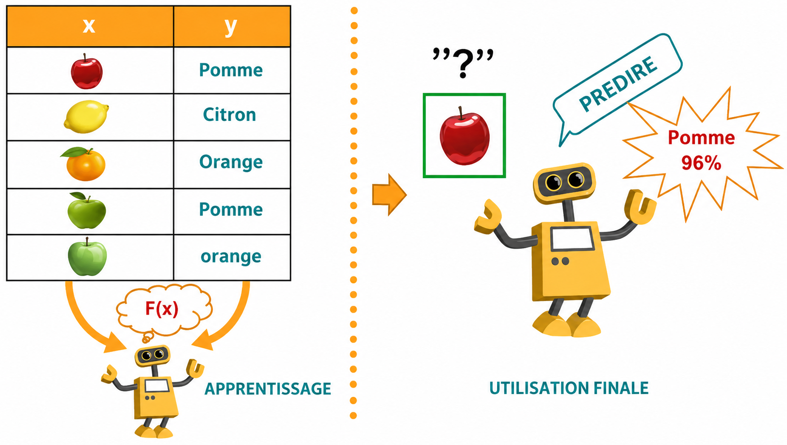
Après une phase d'apprentissage, l'agent peut apprendre à prédire par exemple la nature des images, le score d'un match ou encore le prix d'une maison. Il peut apprendre à reconnaître une photo d'une pomme après qu'on lui ait montré des millions de photos de fruits.
2ème Cas d'utilisation : Classification 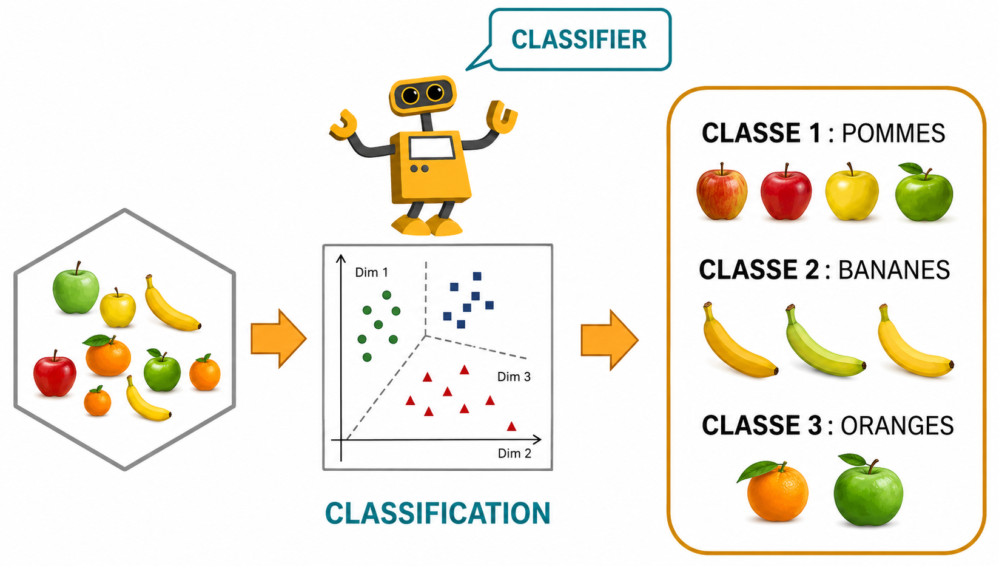
Le deuxième cas d'utilisation de l'IA est la classification de l'intégralité des images de la BD en différentes classes. En effet, la classification est une branche de l'intelligence artificielle qui permet de classer des individus dans des groupes.
3ème Cas d'utilisation : Prédiction d'actions
Enfin, le troisième exemple d'utilisation illustre comment on pourra contrôler un environnement. Dans ce cas aussi, tout va partir de la prédiction et on aura besoin de prédire la meilleure action pour chaque élément de l'environnement pour atteindre notre objectif final. Ceci sera bien entendu en fonction des possibilités de chaque action.

Histoire de l'Intelligence Artificielle
Nous allons explorer les moments clés qui ont marqués l’évolution de l’intelligence artificielle tout au long de l’histoire.

Les prémices de l'intelligence artificielle (1940-1970)
- 1936 : Alan Turing publie un article fondateur sur le concept de machine de Turing, mettant en évidence des failles dans le fonctionnement d'Enigma.
- 1942-1943 : Environ 40 000 messages sont interceptés et décryptés chaque mois par les Britanniques, puis près de 80 000 communications par mois.
- Années 50 : Alan Turing pose la question « Une machine peut-elle penser ? » et crée le Test de Turing pour vérifier si une IA peut imiter une conversation humaine.
- Années 60 : Arthur Samuel développe une IA capable de jouer au jeu de dames en auto-apprentissage.
- Années 70 : Cette période est connue sous le nom de « l'hiver de l'intelligence artificielle ».
La seconde vague d'évolution de l'intelligence artificielle (1980-2010)
- Années 80 : Naissance du concept de Machine Learning (apprentissage automatique) utilisant des probabilités statistiques pour permettre aux ordinateurs d'apprendre par eux-mêmes sans programmation explicite.
- Années 90 : IBM conçoit Deep Blue, un logiciel basé sur le Machine Learning, qui bat Kasparov, le champion du monde des échecs.
- Années 2000-2010 : Apparition de nouveaux concepts dérivés du Machine Learning, plus profonds, avec la mise en place de réseaux de neurones.
- Années 2010 : DeepMind (racheté par Google en 2014) développe AlphaGo, qui bat le champion du monde du jeu Goban.
La troisième vague d'évolution de l'intelligence artificielle (2020~)
Durant cette phase, on assiste à une explosion des technologies qui contribuent à l'émergence de l'intelligence artificielle. On parle de la troisième phase de l'évolution de l'IA ou encore l'ère du Big Data, du Cloud et du GPU.
Ainsi, le concept du Big Data fournit les mécanismes nécessaires à la récolte des données massives, le GPU aide à répartir la puissance de calcul et le Cloud permet de mutualiser l'ensemble des ressources.
Introduction à l'Intelligence Artificielle Générative
Introduction
En Mars 2023, Bill Gates, le cofondateur de Microsoft, a posté sur son blog : « Il y a trois grands temps dans la transformation informatique. Il y a eu le temps de l'Internet, le temps du mobile et aujourd'hui, le temps de l'IA générative. » Pour expliquer ce qu'est l'IA générative, nous commençons par rappeler quelques concepts de l'IA classique. L'IA est une discipline de l'informatique qui existe depuis les années 50 et qui a connu de grandes avancées : Machine Learning, réseaux de neurones artificiels, Deep Learning, pour arriver aujourd'hui à l'IA générative.
Modèles discriminants vs. Modèles génératifs
L'apprentissage automatique (Machine Learning) est un sous-domaine de l'IA. Il s'agit d'un programme ou d'un système qui crée un modèle à partir de données existantes, donnant à l'ordinateur la capacité d'apprendre sans programmation explicite.
L'apprentissage profond (Deep Learning) est un type d'apprentissage automatique qui permet de traiter des problèmes beaucoup plus complexes grâce à l'usage des réseaux de neurones artificiels. Les modèles d'apprentissage profond peuvent être divisés en deux types :
- Modèle discriminant : utilisé pour classer ou prédire les étiquettes des données. Par exemple, le modèle arrive à prédire l'image en entrée comme étant un chien et la classe comme tel (et non comme un chat).
- Modèle génératif : en plus de sa capacité à prédire que c'est un chien, il peut également générer une nouvelle image d'un chien (d'où le nom « génératif »).
L'intelligence artificielle générative
L'IA générative est un sous-domaine de l'apprentissage profond qui crée de nouveaux contenus à partir de ce qu'elle a appris du contenu existant.
Une deuxième caractéristique de l'IA générative par rapport à l'IA classique est qu'elle permet de créer des ponts entre différents domaines : traitement du langage naturel, imagerie, etc. On peut partir d'un texte pour faire une vidéo, d'une vidéo pour faire un podcast, ou faire des slides à partir d'un fichier audio. Ceci crée donc des liens multimodaux.
L'Agent Conversationnel : CHATGPT
Introduction
L'un des développements les plus remarquables de l'IA à l'heure actuelle est l'émergence de l'agent conversationnel ChatGPT, créé par l'entreprise OpenAI. Avant d'expliquer son principe de fonctionnement, clarifions deux concepts différents, souvent confondus : GPT et ChatGPT.
GPT vs. ChatGPT
GPT (Generative Pre-trained Transformer) est un modèle de langage de type LLM (Large Language Model) pour le traitement et la génération du langage naturel. Ces modèles sont extrêmement efficaces pour effectuer des tâches liées au langage : traduire, résumer des textes, générer du contenu ou du code, etc.
ChatGPT est un mot-valise : "chat" fait référence à une discussion en ligne, et "GPT" signifie que ChatGPT a été préalablement entraîné pour générer des réponses pertinentes selon le contexte.
Ce qu'il faut retenir : GPT est un modèle de langage qui sert de « cerveau » à l'agent conversationnel ChatGPT pour tenir des conversations fluides et naturelles avec les utilisateurs.
Les stades d'évolution des modèles GPT

- GPT-1 (juin 2018) : 117 millions de paramètres
- GPT-2 (2019) : 1,5 milliard de paramètres
- GPT-3 (2020) : 175 milliards de paramètres
- GPT-4 (2023) : 1,76 trillion (milliers de milliards) de paramètres. Peut recevoir des images en entrée (amélioration majeure, les versions précédentes acceptaient uniquement le texte).
- GPT-4.5 (2024) : Étape intermédiaire entre GPT-4 et GPT-5. Amélioration de la compréhension contextuelle, cohérence des réponses, gestion des instructions complexes, raisonnement multi-étapes, vitesse rapide et meilleure sécurité.
- GPT-5 (2025) : Saut significatif dans la génération de texte et la compréhension du langage. Capacités accrues en raisonnement, créativité et synthèse d'informations. Interactions plus naturelles et fiables, traitement de contextes très longs. Marque un tournant rapprochant l'IA de conversations quasi humaines.
Comment apprendre avec ChatGPT ?
Introduction
Dans cette partie du cours, nous allons explorer les meilleures pratiques pour interagir avec ChatGPT, un outil d'intelligence artificielle conçu pour comprendre et générer du texte en réponse à des entrées utilisateur. Comprendre comment formuler des prompts efficaces est essentiel pour tirer le meilleur parti de cette technologie puissante.
Être clair et précis
Lorsque vous interagissez avec ChatGPT, la clarté et la précision de vos instructions sont cruciales pour obtenir des résultats pertinents. Exemple : « Expliquez le processus de collecte de données des moteurs de recherche sur le web. » Ce prompt indique clairement le sujet de la demande, permettant à ChatGPT de fournir une réponse précise et détaillée.
Définir le format de sortie
Il est possible de demander à ChatGPT un format de sortie particulier. Exemple : « Résumer l'article de Wikipédia sur Al-Khwarizmi en 100 mots, en utilisant une structure en deux paragraphes. Ajoutez un titre approprié à chaque paragraphe. Enfin, créez un tableau récapitulatif des ouvrages d'Al-Khwarizmi en précisant le domaine. » Définir le format guide le modèle sur l'organisation et la présentation des informations.
Donner un contexte clair
Lorsque vous demandez quelque chose à ChatGPT, spécifiez le contexte pour obtenir des réponses plus adaptées. Exemple : au lieu de « Comment écrire une lettre de motivation ? », préférez : « Je suis étudiant en économie et gestion et je souhaite postuler à un master en marketing digital. Comment rédiger ma lettre de motivation ? »
Préciser l'audience ciblée
Il est primordial de savoir à qui sera destinée la réponse générée. Exemple : « Je suis débutant en programmation. Pourriez-vous m'expliquer de manière simple comment écrire une fonction récursive en Python ? » En précisant votre niveau, ChatGPT ajuste la complexité de sa réponse.
Demander à ChatGPT d'adopter un rôle
Pour simuler des situations réelles, vous pouvez demander à ChatGPT d'adopter un rôle spécifique. Exemple : « Agis en tant que responsable des ressources humaines dans un établissement d'enseignement primaire et pose-moi des questions pour simuler un entretien d'embauche. Je suis titulaire d'une licence en assistance sociale. » Pour rendre l'interaction interactive, demandez-lui de poser une question à la fois.
Diviser les demandes complexes en sous-tâches
Il est tentant de demander à ChatGPT de résoudre une tâche complexe en une seule question, mais cela peut conduire à des réponses imprécises ou superficielles. Une meilleure approche consiste à diviser votre demande en sous-tâches plus petites :
- Commencez par demander un plan détaillé (modules clés).
- Ensuite, développez le contenu pour chaque module, un à la fois.
- Enfin, demandez des activités interactives, des exemples de code et des évaluations.
Sequence V : MS Word
Microsoft Word
Microsoft Word est un logiciel de traitement de texte développé par Microsoft. Il fait partie de la suite bureautique Microsoft Office et permet aux utilisateurs de créer, modifier et formater des documents textuels. Doté de fonctionnalités avancées de mise en page, de correction orthographique et de gestion de document, Word est largement utilisé dans les contextes éducatifs, professionnels et personnels pour la rédaction de rapports, de lettres, de CV, et bien d'autres types de documents. Son interface conviviale et ses outils puissants en font un outil essentiel pour la production de documents professionnels et bien présentés.
Créer un nouveau document
Pour créer un nouveau document :
- Sous l'onglet Fichier, cliquez sur Nouveau,
- Dans la zone Rechercher des modèles en ligne, tapez le type de document que vous souhaitez créer et appuyez sur Entrée.

Environnement MS Word
L'interface de MS Word se compose de plusieurs éléments : ruban (onglets), zone de travail, barre d'état, règles, etc.

Élaboration d'un document
La saisie du texte
Les logiciels de traitement de texte ont la particularité d'être « WYSIWYG » (What You See Is What You Get). Lors du démarrage du logiciel, une page vierge sur laquelle on peut travailler est généralement proposée. Bien que la saisie du texte paraisse simple, elle doit suivre des règles de saisie. Il vaut mieux saisir d'abord tout le document avant de le traiter (frappe au kilomètre).
Les modes de saisie
- Mode insertion : tout texte tapé provoque le décalage du texte existant, tout caractère saisi s'insère entre les caractères existants.
- Mode remplacement (rafrappe) : le texte tapé efface ce qui se trouvait précédemment au niveau du curseur.
Les règles de saisie
Afin de respecter les règles de base :
- Les mots soient séparés par un seul espace.
- Les signes : ; ? soient précédés et suivis d'un espace.
- Les caractères ( [ { soient précédés d'un espace et collés au mot suivant.
- Les caractères ) ] } soient collés au mot précédent et suivis d'un espace.
- Je tape la touche Entrée pour signaler la fin d'un paragraphe.
() Parenthèses | {} Accolades | [] Crochets
Les règles de sélection
| Élément à sélectionner | Action |
|---|---|
| Un mot | Double-cliquer sur le mot |
| Une ligne | Un clic dans la marge du début de ligne |
| Une phrase | CTRL + cliquer sur la phrase |
| Un paragraphe | Triple-cliquer sur le paragraphe ou double-cliquer dans la marge |
| Tout le document | Triple-clic dans la marge du début de ligne |
| Un bloc rectangulaire | Shift + Glisser-Sélectionner le rectangle |
| Ensemble de caractères | Cliquer-glisser OU cliquer début + Shift+clic à la fin |
La recherche et le remplacement du texte
Rechercher :
- Positionnez le point d'insertion où MS Word doit commencer la recherche ou sélectionnez le texte concerné.
- Cliquez sur l'onglet « Accueil » et choisir « rechercher » ou appuyez sur Ctrl+F.
- Saisissez le mot chercher et cliquez sur le bouton suivant.
Remplacer :
- Positionnez le point d'insertion où MS Word doit commencer la recherche ou sélectionnez le texte concerné.
- Cliquez sur l'onglet « Accueil » et choisir « remplacer » ou appuyez sur Ctrl+H.
- Saisissez le texte que vous souhaitez remplacer.
- Saisissez le nouveau texte.
Le déplacement de texte
Méthode 1 : Faites glisser le texte sélectionné à l'aide de la souris.
Méthode 2 :
- Sélectionnez le texte à déplacer.
- Ctrl+X ou bouton droit de la souris / Couper
- Positionnez le curseur au nouvel emplacement.
- Ctrl+V ou bouton droit de la souris / Coller
Le duplicage de texte
Méthode 1 : Faites glisser le texte sélectionné à l'aide de la souris tout en appuyant sur Ctrl.
Méthode 2 :
- Sélectionnez le texte à copier.
- Ctrl+C ou bouton droit de la souris / Copier
- Positionnez le curseur au nouvel emplacement.
- Ctrl+V ou bouton droit de la souris / Coller
La correction orthographique
Le traitement de texte (Word) souligne en rouge les mots mal orthographiés tout au long de la frappe du texte.
Pour corriger un mot :
- Faites un clic droit sur le mot. Word fait apparaître quelques suggestions.
- Cliquez sur la suggestion qui vous convient.
Pour vérifier l'orthographe de tout le document :
- Cliquez quelque part dans le document.
- Cliquez sur l'onglet « Révision ».
- Cliquez ensuite sur l'icône "Orthographe et grammaire".
Remarque : Le vérificateur d'orthographe peut considérer comme faute un nom propre ou un terme technique. Vous pouvez ajouter au dictionnaire de nouveaux mots. Word souligne en vert les fautes de grammaire.
Mise en forme du texte
Ajouter un texte et le mettre en forme
Mettre en forme un texte, c'est appliquer des règles de présentation pour donner une forme particulière à ce texte.
- Positionnez le curseur et entrez du texte.
- Pour mettre le texte en forme, sélectionnez-le, puis choisissez une option : Gras, Italique, Puces, Numérotation, etc.
Copier la mise en forme
- Sélectionnez le texte dont vous voulez copier la mise en forme.
- Cliquez sur Reproduire la mise en forme (pinceau), puis sélectionnez le texte à modifier.
Ajouter un paragraphe et le mettre en forme
- Positionnez le curseur et saisissez le paragraphe.
- Sélectionnez-le, puis choisissez : liste à puces, liste numérotée, liste à plusieurs niveaux, diminuer/augmenter le retrait...
Créer une liste à puces ou une liste numérotée
Création automatique :
- Pour une liste numérotée : tapez 1. (un point) et un espace, puis du texte. Appuyez sur Entrée.
- Pour une liste à puces : tapez * (astérisque) et un espace, puis du texte.
À partir d'un texte existant : Sélectionnez le texte, puis choisissez Accueil → Puces ou Numérotation.
Insertions dans le document
Insérer un tableau et des illustrations
Sélectionnez l'onglet Insertion, puis :
- Tableaux : sélectionnez Tableaux, placez le curseur sur la taille souhaitée.
- Images : sélectionnez Images, recherchez l'image souhaitée.
- Images en ligne : sélectionnez Images en ligne, recherchez et sélectionnez.
- Formes : sélectionnez Formes, puis une forme dans le menu déroulant.
- Icônes : sélectionnez Icônes, puis celle de votre choix.
- Modèles 3D : sélectionnez Modèles 3D, choisissez à partir d'un fichier ou d'une source en ligne.
- Graphique SmartArt : choisissez un graphique SmartArt.
- Graphique : sélectionnez le type de graphique souhaité.
- Capture : sélectionnez Capture d'écran.
Insérer un en-tête, pied de page et numéro de page
- Sélectionnez l'onglet Insertion.
- Choisissez En-tête, Pied de page ou Numéro de page.
Insérer un texte spécial / Insérer un média
Texte spécial : Insertion → catégorie Texte (zone de texte, WordArt, signature, date/heure, objet, etc.)
Média : Insertion → catégorie Média (vidéo en ligne, audio...)
Insérer un lien hypertexte / Ajouter des pages
- Lien hypertexte : Insertion → Liens → Lien hypertexte (ou Ctrl+K).
- Nouvelles pages : Insertion → Pages (Page de garde, page vierge, saut de page).
Mise en page et référencement
Ajouter un arrière-plan de page
- Sélectionnez l'onglet Conception.
- Choisissez la catégorie Arrière-plan de la page (filigrane, couleur de page, bordures de page).
Appliquer la mise en page
- Sélectionnez l'onglet Mise en page.
- Choisissez : marges, orientation, taille, colonnes, sauts, numéros de ligne, césure, etc.
Insérer et mettre en forme une table des matières
- Sélectionnez l'onglet Références.
- Choisissez la catégorie Tables des matières.
- Sélectionnez un style automatique ou personnalisé.
Enregistrement et impression
Enregistrer un document
Accédez à Fichier > Enregistrer sous.
Pour enregistrer au format PDF :
- Accédez à Fichier > Enregistrer sous.
- Sélectionnez l'emplacement (ex: OneDrive).
- Dans la zone Type de fichier, choisissez PDF (*.pdf).
- Sélectionnez Enregistrer.
Imprimer un document
- Sélectionnez Fichier > Imprimer.
- À droite : aperçu du document.
- À gauche : bouton Imprimer et paramètres configurables (nombre de copies, orientation, pages, recto/verso, etc.).
Sequence VI : Le tableur (MS Excel)
Le tableur
Un tableur est un logiciel de création et de manipulation de tableaux numériques ou alphanumériques. Il est destiné à créer des feuilles de calculs constituées de cellules, qui permettent d'entrer du texte, des nombres, des calculs, des fonctions (mathématiques, financières, etc...).
Il existe plusieurs tableurs comme, par exemple : Quattro Pro, OpenOffice Calc, Microsoft Excel.
Fonctionnalités d'un tableur
Au moyen d'un tableur, on peut :
- Saisir des données
- Éditer une feuille de calcul
- Traitement des données
- Mettre en forme une feuille de calcul
- Utiliser des fonctions prédéfinies pour faire des calculs mathématiques
- Représentation des données : réaliser des graphiques
- Mettre en page et imprimer le document
Démarrer Excel
Vous pouvez démarrer Excel de plusieurs façons :
- Méthode 1 : Accédez au menu « Démarrer », puis sélectionnez « Tous les programmes ». Ouvrez le dossier « Microsoft Office » et choisissez « Microsoft Office Excel ».
- Méthode 2 : Cliquez directement sur « Microsoft Excel » après l'avoir ajouté dans le menu « Démarrer » (clic-droit > épingler au menu démarrer).
- Méthode 3 : Cliquez directement sur « Microsoft Excel » en l'ajoutant dans la barre des tâches (clic-droit > épingler à la barre des tâches).
- Méthode 4 : Cliquez directement sur « Microsoft Excel 2010 » dans votre bureau.
- Méthode 5 : Cliquez sur le bouton droit dans un endroit vide, puis positionnez-vous sur Nouveau et choisissez « Feuille de calcul Microsoft Excel ».
Environnement MS Excel
Au milieu, il y a un quadrillage très vaste. C'est votre "zone de travail".

Créer et sauvegarder un classeur
Créer votre premier classeur
Pour créer un nouveau classeur dans Excel, il suffit d'ouvrir l'application, puis de cliquer sur "Fichier" > "Nouveau". À partir de cette page, vous n'avez qu'à double-cliquer sur « Nouveau classeur », présélectionné par défaut. Un nouveau document vierge est alors créé.

Sauvegarder votre classeur
Après ou pendant la rédaction de votre document, il est important de penser à le sauvegarder. Pour cela, retournez dans le menu « Fichier » et cliquez sur « Enregistrer ». Si le document avait déjà été enregistré (ou s'il avait été ouvert depuis un emplacement existant), le classeur sera automatiquement réenregistré avec le même nom et au même emplacement. En revanche, si vous venez de le créer et qu'il n'a pas encore été enregistré, Excel vous demandera de renseigner quelques informations dans une fenêtre dédiée.
Où enregistrer le fichier ? Vous devez sélectionner l'emplacement de l'enregistrement sur votre disque dur. Vous pouvez le faire en sélectionnant le dossier depuis le menu de gauche. Une fois un emplacement sélectionné, son contenu apparaît dans le volet de droite. Vous pouvez alors naviguer à l'intérieur des dossiers.
Nommer le fichier : Vous devez ensuite renseigner le nom de votre classeur. Assurez-vous de donner un nom compréhensible à votre classeur, qui vous permettra de le retrouver plus facilement et de savoir ce qu'il contient.
Caractères à éviter pour les noms de fichier : \ / : ? " < > | *

Imprimer votre classeur
Rendez-vous dans le menu « Fichier », puis cliquez sur cliquez sur « Imprimer ».
La partie gauche de la fenêtre donne accès aux paramètres d'impression, tandis que la partie droite affiche un aperçu avant impression.

Le classeur et les feuilles
Un classeur est un document Excel regroupant plusieurs feuilles. On peut ajouter une feuille dans un classeur, en supprimer une. On sélectionne la feuille à partir de l'onglet d'activation des feuilles.

La feuille et la cellule
- Une feuille est organisée sous forme de tableau numérique constitué de plusieurs lignes et de plusieurs colonnes.
- Chaque ligne est connue par son numéro allant de 1 à 1 048 576.
- Chaque colonne est connue par une ou plusieurs lettres allant de A, B, C... jusqu'à XFD (16 384 colonnes).
- Une cellule est l'intersection d'une colonne et d'une ligne.
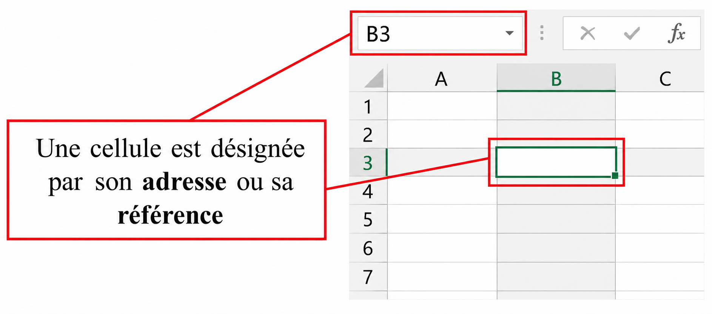
Saisir des données
- Pour commencer la saisie de vos données, il suffit de cliquer sur une cellule pour la rendre active.
- Un texte est toujours aligné à gauche de la cellule par défaut.
- Les nombres, les dates et les heures sont alignés à droite de la cellule.
- Une donnée alphanumérique est considérée comme texte et sera alignée à gauche de la cellule.
- Si le texte dépasse la largeur de la colonne, alors il sera étendu sur la cellule voisine.
La mise en forme des cellules
Sélectionner des cellules
« AVANT TOUT... LA SÉLECTION » – La sélection est indispensable pour agir sur une ou plusieurs cellules.
- Sélection d'une colonne entière : clique sur la lettre de la colonne.
- Sélection d'une ligne entière : clique sur le numéro de la ligne.
- Sélection de toute la feuille : clique sur le bouton situé dans le coin haut gauche de la feuille.
- Sélection continue de cellules : un clic sur la première cellule sans relâcher le bouton gauche de la souris dans la direction de la sélection.
Modifier le contenu d'une cellule
- Sélectionnez la cellule.
- Modifiez le contenu à partir de la barre de formules, puis quittez la cellule.
- Ou bien : double-cliquez sur la cellule et faites les modifications adéquates.
Apparence et mise en forme
Après la saisie des données, il est préférable de changer l'apparence de la feuille pour mieux la présenter. Pour mettre en forme les cellules, on utilise les icônes de l'onglet « Accueil » ou la fenêtre « Format de cellule ».
- Nombre : Permet de choisir un format pour les valeurs (Monétaire, Date, Pourcentage, etc.).
- Alignement : Alignement du texte (horizontal/vertical), contrôle du texte (renvoyer à la ligne, ajuster, fusionner), orientation du texte.
Ajustement de la largeur des colonnes
- Automatique : sélectionnez les cellules concernées → Format (onglet Accueil) → Ajuster la largeur de colonne.
- Manuel : utilisez la souris pour redimensionner.
Les formules
Voici une feuille de calcul avec les quatre opérations arithmétiques :
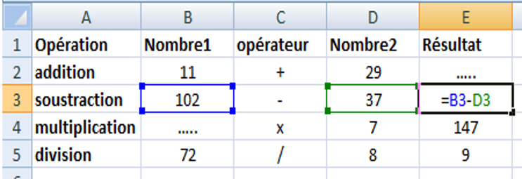
- Quel est le résultat de la cellule E3 ?
- Quel nombre doit contenir la cellule B4 ?
- Quelle formule contient la cellule E5 ?
- Quelle formule devons-nous mettre dans la cellule E2 ?
Calcul de la moyenne
Pour calculer la moyenne, on introduit une formule :
- On se place dans la cellule où le résultat sera affiché.
- On commence par taper le signe =
- On tape la formule (ex: =(B2+B3)/2)
- On valide par la touche Entrée.
- Ensuite, on recopie la formule.
Référence relative
La référence relative prend en considération le changement des lignes ou des colonnes. Une formule commence toujours par le signe =. Exemple : =B2+B3 ou =(B2+B3)/2.
Après une recopie incrémentée verticalement, la formule change relativement par rapport à sa nouvelle position. L'erreur vient du fait que la formule recopiée fait référence relative à la valeur de la cellule source.

Référence absolue
Pour résoudre l'erreur de recopie, on fait appel à la référence absolue : $A$1. On fixe la position de la cellule en utilisant le signe $. Exemple : =A2*$B$2 (le B2 reste fixe lors de la recopie).
Les fonctions
Une fonction est une formule prédéfinie qui effectue une opération particulière. Au lieu de taper par exemple =B3+B4+B5+B6, il suffit de taper =SOMME(B3:B6).
Il existe plusieurs catégories de fonctions : mathématiques, financières, logiques, recherche, statistiques, etc.
Exemple : SOMME(2;3)=5. Fonctions courantes : SOMME, PRODUIT, MAX, MIN, MOYENNE.
Les graphiques
Le grapheur est un logiciel permettant de représenter graphiquement des données. Il est intégré dans Excel.
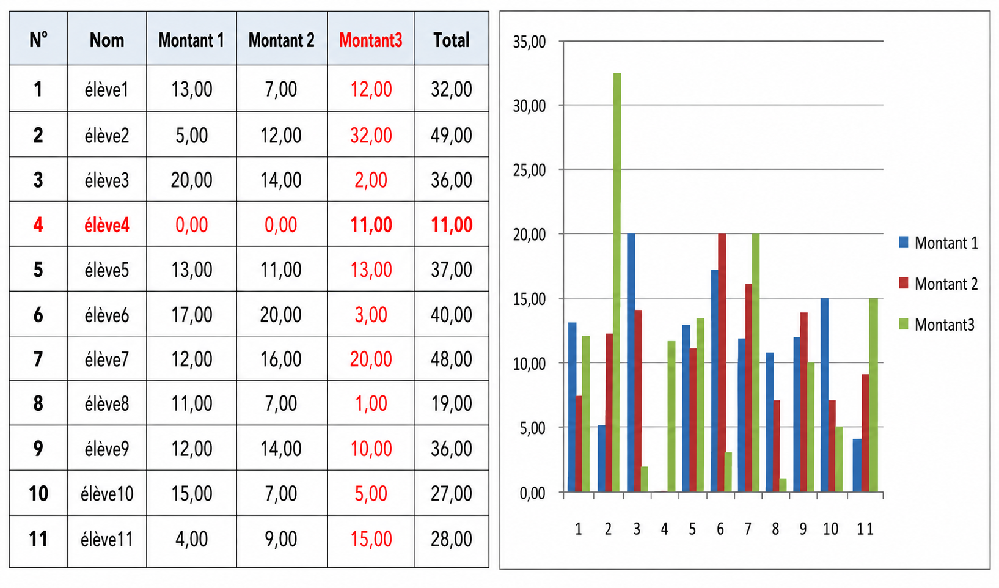
Sequence VII : MS PowerPoint
MS PowerPoint
PowerPoint fait partie de la suite bureautique Microsoft Office. PowerPoint permet de réaliser des présentations sous forme de diapositives diffusées généralement par un vidéo projecteur afin d'appuyer un exposé oral. Il est possible d'y intégrer textes, images, animation, tableaux et graphiques.
Créer une nouvelle présentation
Pour créer une nouvelle présentation :
- Ouvrez PowerPoint.
- Sélectionnez une option :
- Sélectionnez Nouvelle présentation pour créer une présentation à partir de zéro.
- Sélectionnez un modèle.

Ajouter une diapositive
Pour ajouter une diapositive :
- Sélectionnez Accueil,
- Puis cliquez sur « Nouvelle diapositive »,
- Sélectionnez Disposition et tapez ce que vous souhaitez dans la liste déroulante.

Ajouter et mettre en forme du texte
Pour ajouter et mettre en forme du texte :
- Placez le curseur à l'endroit souhaité dans la zone de texte, puis tapez votre texte.
- Sélectionnez le texte, puis sélectionnez une option sous l'onglet Accueil : Police, Taille de police, Gras, Italique, Souligné, ...
- Pour créer des listes à puces ou numérotées, sélectionnez le texte, puis l'option Puces ou Numérotation.

Ajouter des illustrations
Pour ajouter des illustrations :
- Sélectionnez l'onglet Insertion,
- Puis choisir la catégorie Illustration.
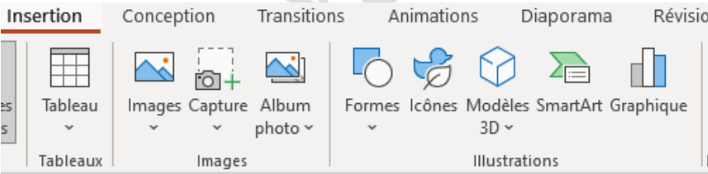
Ajouter et mettre en forme un tableau
Pour ajouter et mettre en forme un tableau :
- Sélectionnez l'onglet Insertion.
- Puis choisir la catégorie Tableaux.
- Pour mettre en forme un tableau, il suffit de double cliquer sur le tableau ajouté : l'onglet Création de tableau s'ajoute à la liste des onglets.

Modifier un tableau
Pour insérer des lignes ou des colonnes :
- Il faut cliquer droit sur le tableau.
- Vous visualisez par la suite la catégorie pour permettre d'insérer des lignes ou colonnes au niveau du tableau.
Pour supprimer des lignes ou des colonnes :
- Il faut cliquer droit sur le tableau.
- Vous visualisez par la suite la catégorie pour permettre de supprimer des lignes ou des colonnes.
Modifier une diapositive
Pour sélectionner, dupliquer, déplacer et supprimer une diapositive :
- Pour sélectionner, il suffit de cliquer sur la diapositive à gauche.
Ajouter, modifier ou supprimer des transitions
Une transition de diapositive est l'effet visuel qui se produit lorsque vous passez d'une diapositive à l'autre pendant une présentation. Vous pouvez contrôler la vitesse, ajouter du son et personnaliser l'apparence des effets de transition.
Pour ajouter des transitions entre les diapositives :
- Sélectionnez la diapositive à laquelle vous souhaitez ajouter une transition.
- Sélectionnez l'onglet Transitions, puis choisissez une transition. Sélectionnez une transition pour afficher un aperçu.
- Sélectionnez Options d'effet pour choisir la direction et la nature de la transition.
- Sélectionnez Aperçu pour voir la transition en action.
Remarque : Pour supprimer une transition, sélectionnez Transitions > Aucune.
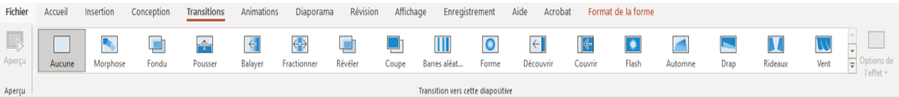
Animer du texte ou des objets
Vous pouvez animer le texte, les images, les formes, les tableaux, les graphiques SmartArt et d'autres objets dans votre présentation PowerPoint. Les effets permettent de faire apparaître un objet, de le faire disparaître ou de le déplacer. Ils peuvent également modifier la taille ou la couleur d'un objet.
Pour ajouter des animations :
- Sélectionnez l'objet ou le texte à animer.
- Sélectionnez Animations et choisissez une animation.
- Sélectionnez Options d'effet, puis choisissez un effet.
Pour ajouter plus d'effets à une animation :
- Sélectionnez un objet ou un texte avec animation.
- Sélectionnez Ajouter une Animation et choisissez une animation.
Pour modifier l'ordre des animations :
- Sélectionnez un marqueur d'animation.
- Sélectionnez l'option de votre choix :
- Déplacer antérieurement : permet d'afficher une animation plus tôt dans la séquence.
- Déplacer ultérieurement : permet d'afficher une animation plus tard dans la séquence.
Pour ajouter une animation à des objets groupés :
- Appuyez sur Ctrl et sélectionnez les objets souhaités.
- Sélectionnez Format > Groupe > Grouper pour grouper les objets.
- Sélectionnez Animations et choisissez une animation.
Démarrer la présentation
Pour choisir le mode de démarrage de la présentation :
- Pour se faire, il suffit de cliquer sur l'onglet Diaporama.
- Choisir par la suite la catégorie Démarrage du diaporama.
Si vous utilisez PowerPoint sur un seul ordinateur et que vous voulez afficher le mode Présentateur, dans l'affichage Diaporama, sur la barre de contrôle en bas à gauche, sélectionnez l'icône avec les 3 points.
Ajouter des commentaires
Lors de votre présentation, les notes du présentateur apparaissent sur votre moniteur, mais ne sont pas visibles au public. Le volet Notes est donc l'emplacement de stockage des points de discussion que vous voulez mentionner lorsque vous donnez votre présentation.
Ajouter un thème
Pour ajouter un thème à la présentation :
- Sélectionnez l'onglet Conception et choisir les thèmes de la présentation.

Modes de présentation et masques
Pour choisir les modes de présentations et de masques :
- Sélectionnez l'onglet Affichage,
- Puis par la suite choisir les catégories « Modes de présentations » et « Modes de masques ».